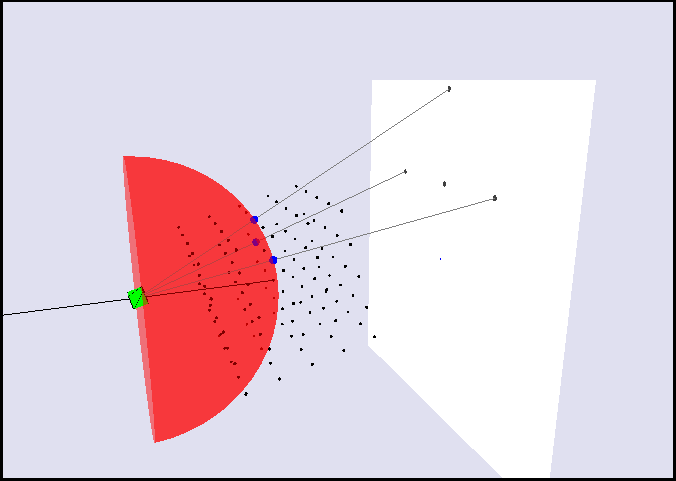

By Katie Tlusty, Paul Bond, K Cowtan
Welcome to the 3D Ewald sphere tutorial! The aim of this tutorial is to learn about the Ewald sphere, and how it explains X-ray diffraction patterns. The tutorial uses an interactive tool, the 'Ewald sphere 3D applet'. It builds on concepts from the 2D Ewald sphere tutorial.
This tool is designed to support learning as part of a formal taught course in X-ray crystallography, and is provided here so that anyone can incorporate it in their teaching materials. It was not designed for self-directed learning, but may be useful as a reinforcement activity in some cases.

| Kevin Cowtan: | |
|---|